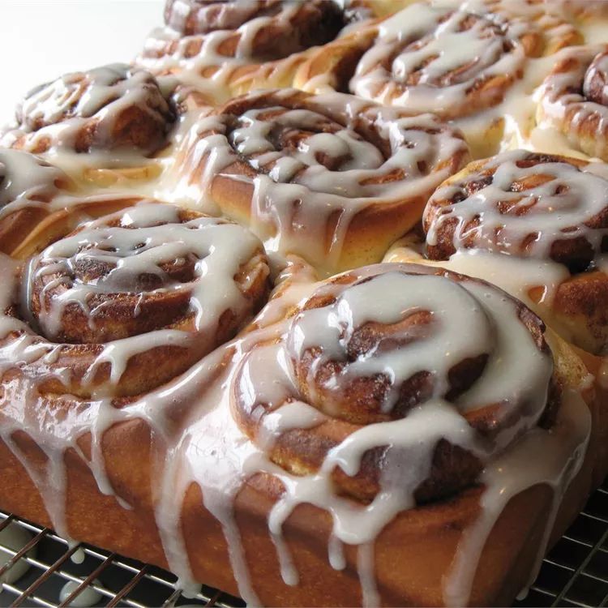

<!DOCTYPE html>
<html lang="en">
<head>
    <meta charset="UTF-8">
    <meta name="viewport" content="width=device-width, initial-scale=1.0">
    <title>Cinnamon Rolls</title>
    <link rel="stylesheet" href="styles.css">
</html>
</head>
<body><h1>Cinnamon Rolls</h1>

<h3>Description</h3>
<p>When you have a craving for soft pillowy sticky cinnamon rolls this is the craving for you! I'll show you step by step how to make cinnamon rolls from scratch - from making dough to filling, forming, baking, and icing.</p>
<h2>Ingredients</h2>
<p>Yields 12 servings</p>
<ul>
    <li>3/4 cup milk</li>
    <li>1/4 cup margarine, softened</li>
    <li>3 1/4 all0purpose flour</li>
    <li>1/4 cup white sugar</li>
    <li>1 package instant yeast (.25 ounce)</li>
    <li>1/2 teaspoon salt</li>
    <li>1/4 cup water</li>
    <li>1 large egg</li>
    <li>1 cup brown sugar, packed</li>
    <li>1/2 cup margarine, softened</li>
    <li>1 tablespoon ground cinnamon</li>
    <li>1/2 cup raisins (optional)</li>
</ul>
<h3>Directions</h3>
<ol>
    <li>Heat milk in a small saucepan until just hot to touch or a few bubbles form around the edge. Remove from heat and stir in margarine until melted; set aside.</li>
    <li>Combine 2 1/4 cups flour, white sugar, yeast, and salt in a large bowl. Add milk mixture, water, and egg; beat well. Add remaining 1 cup flour, 1/2 cup at a time, stirring well after each addition</li>
    <li>Turn dough out onto a lightly floured surface and knead until smooth, about 5 minutes. Cover with a damp cloth and let rest for 10 minutes.</li>
    <li>While dough is resting, mix together brown sugar, margarine, and cinnamon in a small bowl. Set aside.</li>
    <li>Preheat the oven to 375 degrees F (190 degrees C). Grease a 12-cup muffin pan.</li>
    <li>Roll dough out on a lightly floured surface into a 12x9-inch rectangle. Spread brown sugar mixture over dough; sprinkle with raisins.</li>
    <li>Roll up dough and pinch seam to seal. Cut into 12 equal rolls.</li>
    <li>Place cut-side up in the prepared muffin cups. Cover and let rise until doubled, about 30 minutes.</li>
    <li>Bake in the preheated oven until browned, about 20 minutes. Remove rolls from muffin cups to cool on a wire rack. Serve warm.</li>
</ol></body>
<a href="../index.html">Home</a>